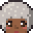

Dra. Addison Montgomery
A Dra. Addison Montgomery comanda o Centro Materno-Infantil do Conti Moretti. Salto alto e plantão de 24 horas.
Rotina
As médicas não têm rotina fixa: o plantão no Conti Moretti alterna os postos sem repetir, o almoço é cada dia num lugar e há 2 folgas por semana. Um exemplo de semana:
| Hora | Lugar |
|---|---|
| 6h | Fora do centro |
| 8h | Conti Moretti Hospitais |
| 12h | Parque Central |
| 13h | Conti Moretti Hospitais |
| 19h20 | Fora do centro |
Segunda
| Hora | Lugar |
|---|---|
| 6h | Fora do centro |
| 8h | Conti Moretti Hospitais |
| 12h | Jardim do Mirante |
| 13h | Conti Moretti Hospitais |
| 19h20 | Cine National |
| 21h20 | Fora do centro |
Terça
| Hora | Lugar |
|---|---|
| 6h | Fora do centro |
| 10h | Parque Central |
| 14h | Cine National |
| 17h | Praia |
| 20h | Fora do centro |
Quarta
Presentes
No aniversário (8 de Inverno), o presente vale mais: amado ×5, gostou ×3 e neutro ×2.
| Reação | Itens |
|---|---|
| Ama +80 pontos | |
| Gosta +45 pontos | |
| Neutro +20 pontos | Todo o resto (coletáveis e itens comuns) |
| Não gosta −20 pontos |
Eventos de coração
| Corações | Evento | Onde e quando | O que ganha |
|---|---|---|---|
| ♥ 3 | Conversa | Na próxima conversa | Presente: Kit Autocuidado |
| ♥ 5 | Addison: cuidar de quem cuida | Conti Moretti Hospitais, das 13h às 19h | Embrulho da Addison: presentes rendem 15% mais amizade. |
Falas
“Saltos de 12 centímetros e plantão de 24 horas. Sim, dá.”
Logo que se conhecem
“Eu morei em Los Angeles por anos. National City tem um charme que LA não tem.”
Com amizade
“Você é das poucas pessoas pra quem eu ligaria às três da manhã.”
Bem próximas
Mensagens no celular
Com 2 corações, ela manda mensagens de vez em quando (app Mensagens, tecla T). Responder dá amizade e carisma.
Ver as 6 mensagens e as respostas
Três partos hoje, todos lindos. Estou exausta e flutuando.
- Que dia lindo! Descansa um pouco. → Vou dormir doze horas. Ou duas. Depende dos bebês.
- Três vidas novas no mundo. Que demais. → É o melhor trabalho do mundo. Não conta pra Cristina.
- Quer um jantar pra comemorar? → Quero. Com vinho. Depois de dormir.
Comprei sapatos novos. Não precisava. Foi a melhor decisão da semana.
- A Celeste já sabe? → Foi ela que me vendeu. Ela é perigosa.
- Manda foto! → Mandei. São vermelhos. Combinam com a minha falta de juízo.
- Sapato novo sempre é necessário. → Finalmente alguém que entende.
Se a Celeste te perguntar, eu NÃO experimentei o vestido vermelho da vitrine. Três vezes.
- Meu silêncio é garantido. → Você é uma ótima amiga. E uma péssima testemunha, espero.
- Três vezes? Compra logo. → Ok. Comprei. Agora você é cúmplice.
- Ela já sabe, Addison. → Claro que sabe. Ela sabe tudo. Vou me esconder.
Fiz três partos hoje, todos tranquilos. Estou de salto desde as 6h. Meus pés estão pedindo demissão.
- Tira o salto! → Nunca. Mas vou colocar os pés para cima. Já é um avanço.
- Três bebês! Parabéns. → Duas meninas e um menino. Um deles chorou igual tenor.
- Você é uma super-heroína. → De salto. A capa ficou em casa.
Vi um vestido na La Boutique que é a minha cara. A Celeste disse que é a sua também. Briga amigável?
- Pode ficar com ele. → Que generosa. Eu ia comprar de qualquer jeito.
- Dividimos: cada uma usa num dia. → Gostei. Você usa na segunda, que é dia de reunião.
- A Celeste disse isso pra todo mundo. → Aquela francesa esperta. Funcionou comigo.
A brinquedoteca ganhou desenhos novos na parede. Um deles é você contando história. Você está roxa.
- Roxa é a minha cor! → Foi o que a criança disse. Ela tem bom gosto.
- Quero ver esse desenho. → Está do lado do meu consultório. Com moldura e tudo.
- As crianças são as melhores. → São. E sinceras demais. Uma disse que eu ando de pernas de pau.
Retratos
| Luthor Corp | |
|---|---|
| CatCo | |
| Moradores |  Graça |
| Conti Moretti | |
| De fora da cidade |